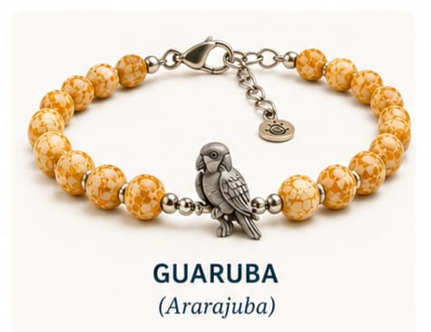
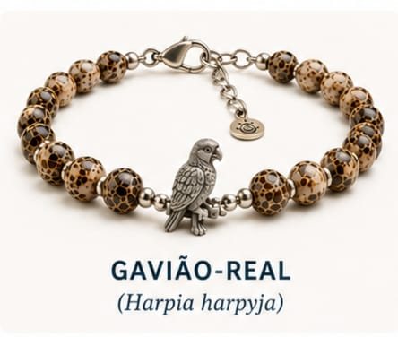
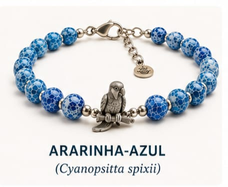
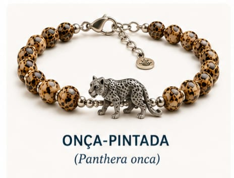
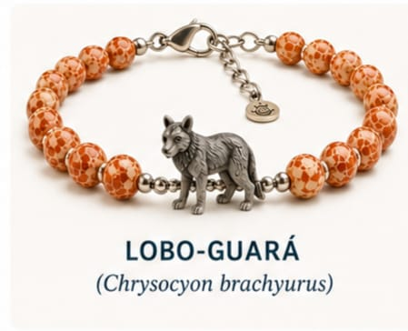
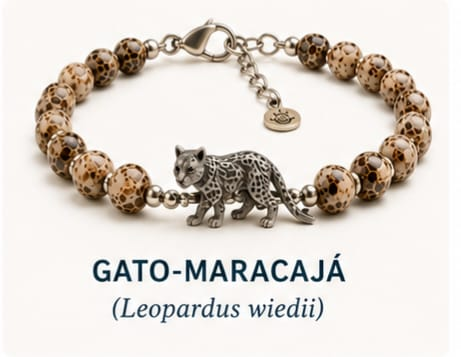
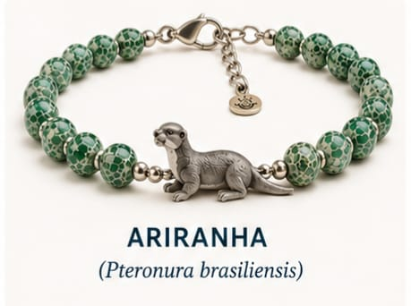
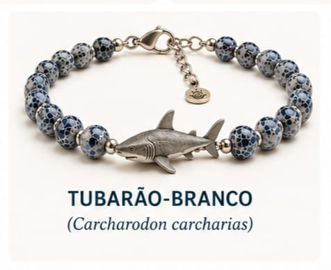
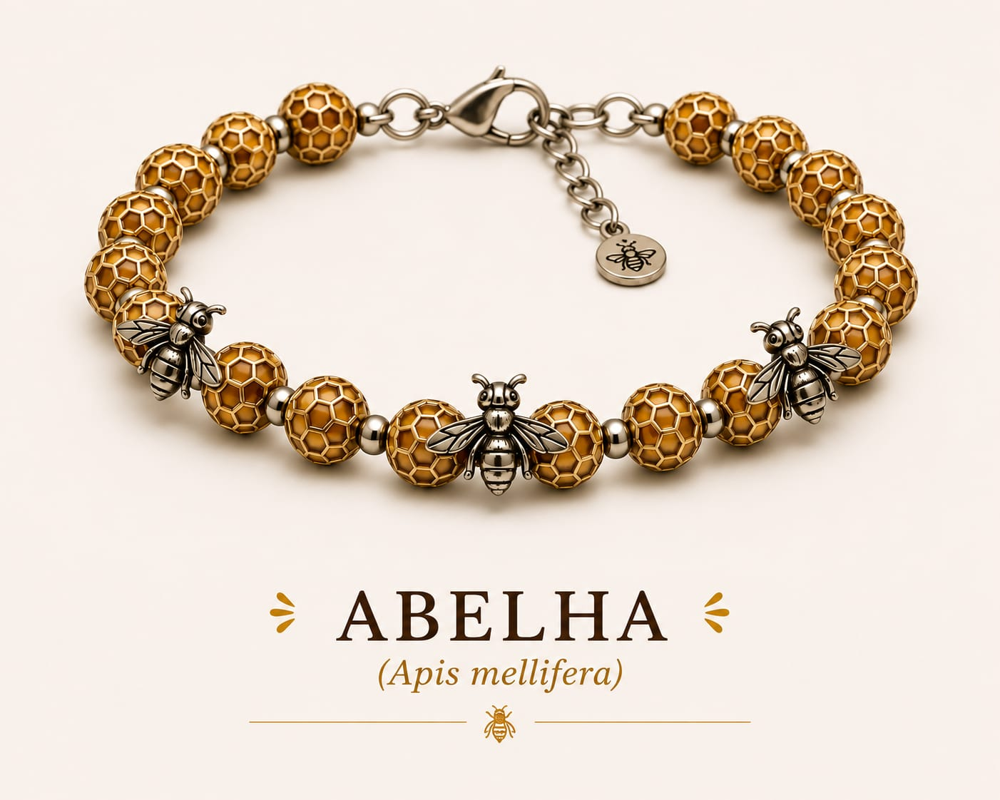

Ao adquirir uma pulseira, você ajuda projetos de conservação e acompanha a história de um animal monitorado.
Animais Monitorados
Projetos Apoiados
Pulseiras Entregues

Acompanhe uma das aves mais raras do Brasil.

Ajude na preservação do maior predador das florestas.

Conheça uma das espécies símbolo do Pantanal.

O maior felino das Américas precisa de proteção.

Canideo de pernas longas e pelagem avermelhada, nativo da américa do sul.

Um felino silvestre de pequeno porte, com hábitos noturnos.

A maior espécie de lotra do mundo, encontrada em rios sul americanos.

Um predador marinho de grande porte, veloz e forte, cuja dieta é peixes.

Insetos sociais que se organizam em côlonias.
Cada compra contribui para pesquisas de conservação, monitoramento de espécies e educação ambiental. Você recebe um código exclusivo para acompanhar um animal participante do projeto.